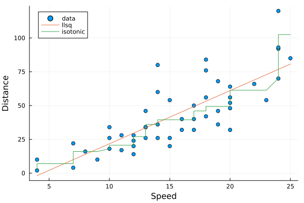

Regression
The package provides functions to perform Linear Least Square, Ridge, and Isotonic Regression.
Examples
Performing llsq regression on cars data set:
using MultivariateStats, RDatasets, Plots
# load cars dataset
cars = dataset("datasets", "cars")
# calculate regression models
a = llsq(cars[!,:Speed], cars[!, :Dist])
b = isotonic(cars[!,:Speed], cars[!, :Dist])
# plot results
p = scatter(cars[!,:Speed], cars[!,:Dist], xlab="Speed", ylab="Distance",
leg=:topleft, lab="data")
let xs = cars[!,:Speed]
plot!(p, xs, map(x->a[1]*x+a[2], xs), lab="llsq")
plot!(p, xs, b, lab="isotonic")
end
For a single response vector y (without using bias):
# prepare data
X = rand(1000, 3) # feature matrix
a0 = rand(3) # ground truths
y = X * a0 + 0.1 * randn(1000) # generate response
# solve using llsq
a = llsq(X, y; bias=false)
# do prediction
yp = X * a
# measure the error
rmse = sqrt(mean(abs2.(y - yp)))
print("rmse = $rmse")For a single response vector y (using bias):
# prepare data
X = rand(1000, 3)
a0, b0 = rand(3), rand()
y = X * a0 .+ b0 .+ 0.1 * randn(1000)
# solve using llsq
sol = llsq(X, y)
# extract results
a, b = sol[1:end-1], sol[end]
# do prediction
yp = X * a .+ b'For a matrix of column-stored regressors X and a matrix comprised of multiple columns of dependent variables Y:
# prepare data
X = rand(3, 1000)
A0, b0 = rand(3, 5), rand(1, 5)
Y = (X' * A0 .+ b0) + 0.1 * randn(1000, 5)
# solve using llsq
sol = llsq(X, Y, dims=2)
# extract results
A, b = sol[1:end-1,:], sol[end,:]
# do prediction
Yp = X'*A .+ b'Linear Least Square
Linear Least Square is to find linear combination(s) of given variables to fit the responses by minimizing the squared error between them. This can be formulated as an optimization as follows:
\[\mathop{\mathrm{minimize}}_{(\mathbf{a}, b)} \ \frac{1}{2} \|\mathbf{y} - (\mathbf{X} \mathbf{a} + b)\|^2\]
Sometimes, the coefficient matrix is given in a transposed form, in which case, the optimization is modified as:
\[\mathop{\mathrm{minimize}}_{(\mathbf{a}, b)} \ \frac{1}{2} \|\mathbf{y} - (\mathbf{X}^T \mathbf{a} + b)\|^2\]
The package provides following functions to solve the above problems:
MultivariateStats.llsq — Function
llsq(X, y; ...)Solve the linear least square problem.
Here, y can be either a vector, or a matrix where each column is a response vector.
This function accepts two keyword arguments:
dims: whether input observations are stored as rows (1) or columns (2). (default is1)bias: whether to include the bias termb. (default istrue)
The function results the solution a. In particular, when y is a vector (matrix), a is also a vector (matrix). If bias is true, then the returned array is augmented as [a; b].
Ridge Regression
Compared to linear least square, Ridge Regression uses an additional quadratic term to regularize the problem:
\[\mathop{\mathrm{minimize}}_{(\mathbf{a}, b)} \ \frac{1}{2} \|\mathbf{y} - (\mathbf{X} \mathbf{a} + b)\|^2 + \frac{1}{2} \mathbf{a}^T \mathbf{Q} \mathbf{a}\]
The transposed form:
\[ \mathop{\mathrm{minimize}}_{(\mathbf{a}, b)} \ \frac{1}{2} \|\mathbf{y} - (\mathbf{X}^T \mathbf{a} + b)\|^2 + \frac{1}{2} \mathbf{a}^T \mathbf{Q} \mathbf{a}\]
The package provides following functions to solve the above problems:
MultivariateStats.ridge — Function
ridge(X, y, r; ...)Solve the ridge regression problem.
Here, $y$ can be either a vector, or a matrix where each column is a response vector.
The argument r gives the quadratic regularization matrix $Q$, which can be in either of the following forms:
ris a real scalar, then $Q$ is considered to ber * eye(n), wherenis the dimension ofa.ris a real vector, then $Q$ is considered to bediagm(r).ris a real symmetric matrix, then $Q$ is simply considered to ber.
This function accepts two keyword arguments:
dims: whether input observations are stored as rows (1) or columns (2). (default is1)bias: whether to include the bias termb. (default istrue)
The function results the solution a. In particular, when y is a vector (matrix), a is also a vector (matrix). If bias is true, then the returned array is augmented as [a; b].
Isotonic Regression
Isotonic regression or monotonic regression fits a sequence of observations into a fitted line that is non-decreasing (or non-increasing) everywhere. The problem defined as a weighted least-squares fit ${\hat {y}}_{i} \approx y_{i}$ for all $i$, subject to the constraint that ${\hat {y}}_{i} \leq {\hat {y}}_{j}$ whenever $x_{i} \leq x_{j}$. This gives the following quadratic program:
\[\min \sum_{i=1}^{n} w_{i}({\hat {y}}_{i}-y_{i})^{2} \text{ subject to } {\hat {y}}_{i} \leq {\hat {y}}_{j} \text{ for all } (i,j) \in E\]
where $E=\{(i,j):x_{i}\leq x_{j}\}$ specifies the partial ordering of the observed inputs $x_{i}$.
The package solves this program with an active set method[1]:
MultivariateStats.isotonic — Function
isotonic(x, y[, w])Solve the isotonic regression problem using the pool adjacent violators algorithm[1].
Here x is the regressor vector, y is response vector, and w is an optional weights vector.
The function returns a prediction vector of the same size as the regressor vector x.
References
- 1Best, M.J., Chakravarti, N. Active set algorithms for isotonic regression; A unifying framework. Mathematical Programming 47, 425–439 (1990).